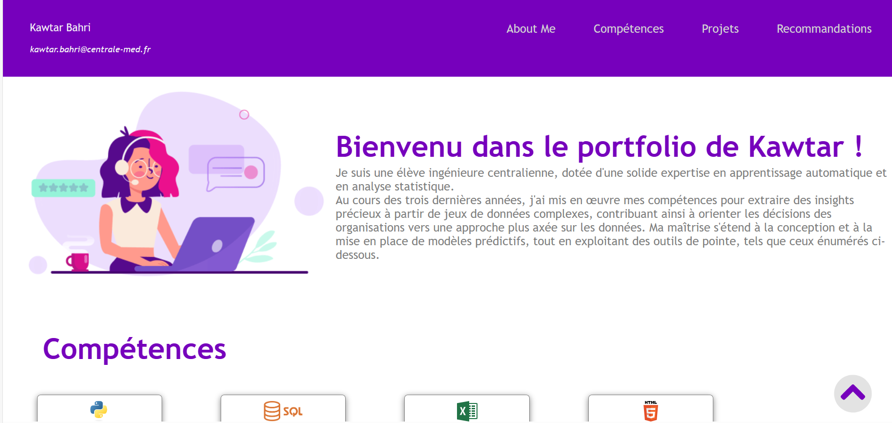
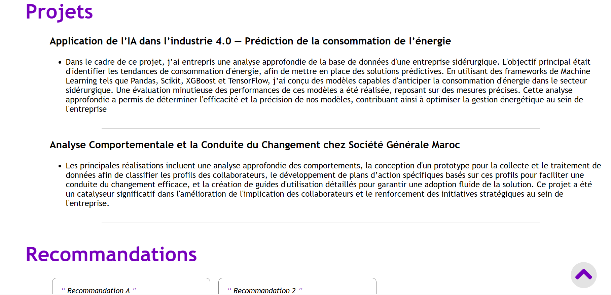
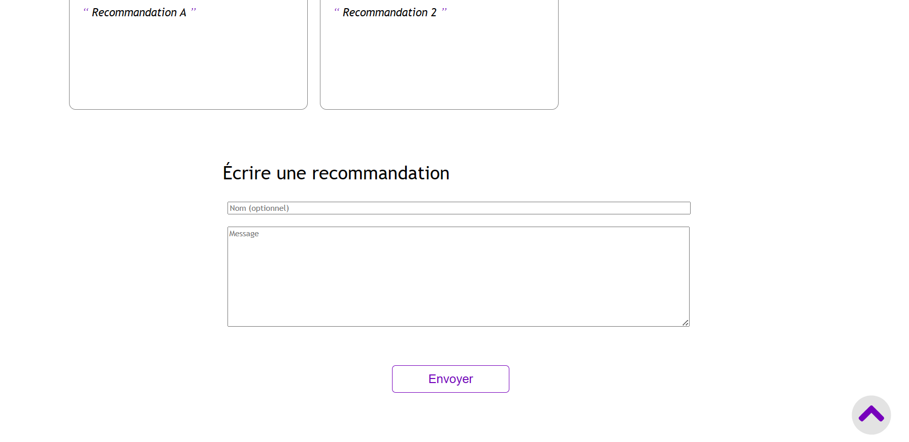
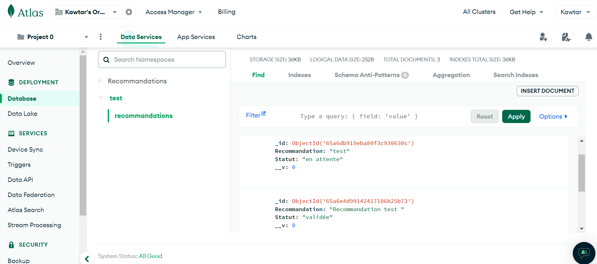
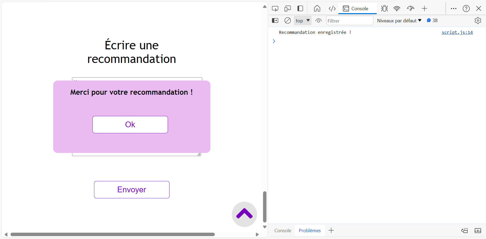
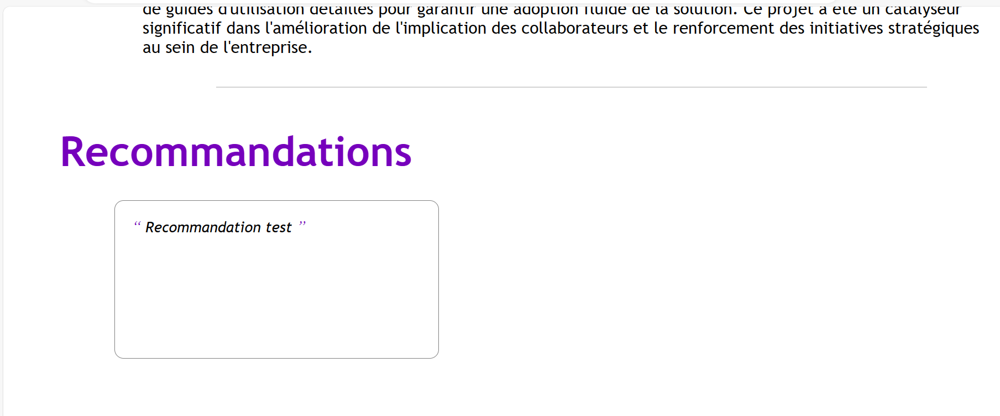

Portfolio
- POK
- 2023-2024
- temps 2
- Kawtar Bahri
L'objectif principal de ce POK est de créer un portfolio en ligne dynamique et interactif qui met en valeur mon profil. Ce portfolio servira comme une plateforme centralisée pour présenter mes compétences, expériences, projets et réalisations, offrant aux visiteurs une l'opportunité de faire une demande ou de laisser une recommandation.
Roadmap :
Sprint 1
- Documentation (Découvrir JavaScript) 5h
- Planification et Conception du contenu et de l’interface du portfolio 1h
- Développement du Front-End 4h
Sprint 2
- Développement du Back-End 4h
- Tests, Débogage 1h
- Hébergement du site 5h
Réalisation du sprint 1:
-
Documentation : Pour découvrir JavaScript en relation avec ce que j'ai appris en MON Temps en HTML et CSS, j'ai choisi ce cours. Cette étape est effectuée (voir certificat).
-
Planification et Conception du contenu et de l’interface du portfolio Objectifs du Portfolio : • Présenter mes compétences, mes projets passés, attirer des employeurs ou des clients potentiels • Communiquer avec ces employeurs / clients (via une rubrique de demandes & recommandations)
-
Développement du Front-End   
Réalisation du sprint 2:
1. Installation des outils
- Configuration de l'environnement du projet
- Installation de : Node.js, Express, Mongoose, ThunderClient
2. Création d’un serveur
- Création d'un serveur simple
- Liaison du Back et Front du site
3. Création d’une base de données
- Création d'une base de données sur MongoDB Atlas
- Etablissement de la connexion de la base données et le serveur
//La chaine de connexion est fournie par MongoDB
mongoose.connect('chaine de connexion,
{ useNewUrlParser: true,
useUnifiedTopology: true })
.then(() => console.log('Connexion à MongoDB réussie !'))
.catch(() => console.log('Connexion à MongoDB échouée !'));- Conception du schéma de base de données
const mongoose = require('mongoose');
const monSchema = mongoose.Schema({
//le nom est un champs non obligatoire
Nom: { type: String, required: false },
Recommandation: { type: String, required: true },
Statut: { type: String, default: 'en attente' },
});
module.exports = mongoose.model('Recommandations', monSchema);4. Configuration des routes
- Route POST pour récupérer les recommandations provenant du formulaire
- Route GET pour publier les recommandations validées sur le site
5. Tests & Debogage La base de données :  Le serveur :  Le site :  Le code : Le code développé dans ce POK est disponible sur mon github repository